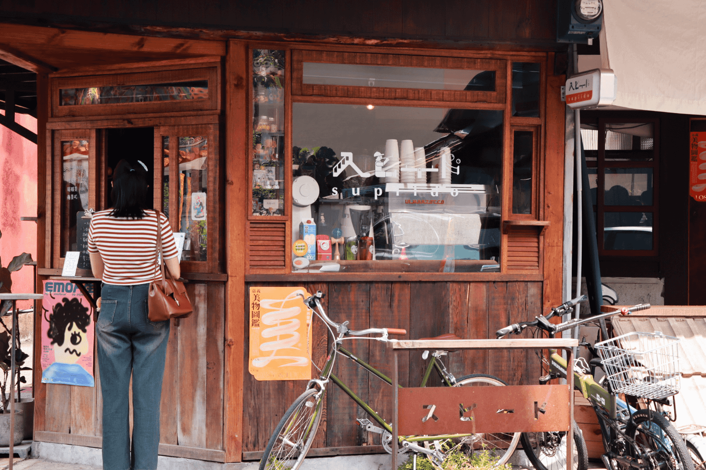

新華美西裝社：我想做的事，努力去做，就會達成。
03 Sep， 2024 / 文、攝: 石佳艷

「如果以三個詞形容你們店或是想成獻給顧客的感覺，會是哪三個詞?」
品牌經理人jimmy道:「我想會是『新舊、城市探索、小聚』吧!」
這次我們採訪的主角是座落在成仁街和蘭井街，小巷的交叉處的新華美西裝社，從國民政府時期就存在，它見證嘉義市的歷史變遷。也因為如此，jimmy將新華美西裝社的主視覺設定為深色，是因為有「堆疊」的寓意，從嘉義後火車站甚至是一些嘉義市還未翻新的老屋可以發現漆料是一層一層堆疊，色料很接近褐色甚至到黑色。整體就想呈現東西在堆疊的過程。
保持好奇心，成為自己想要的樣子
Jimmy原本是就讀牙體設計的學生，後來在朋友創業的店面協助裝修和店面成立，完成之後也有想要創業的想法，離職之後就飛到澳洲體驗人生。除了存創業基金，jimmy很大一部分時間都是花在「體驗生活」，不論是潛水、泛舟、公路旅行等等，每個排休還會到很遠很遠的地方，交替步行和公共交通工具慢慢逛四到五間的店，不管是咖啡廳或是烘焙，思考店家們的裝潢模式和空間狀態，在這兩年不斷去累積及比對自己想要的和自己能執行的模型，像海綿一樣的學習經驗，再開始自己的創業之。
除了是新華美的主理人，也有參與知名餐廳「穀谷」的設計及策劃，很用心的是在這麼繁忙時期，jimmy和姐姐都是親自負責店面所有事務，網路經營也是親自操刀。在很多方面也可以看到他們的巧思，建築物裡保留的細節，讓過去的痕跡能完整保留下來，是為了讓待在此空間的客人們，可以透過一面牆、一跟木柱，穿梭至民國46年，新華美剛開店的年代，了解這棟建築陪伴嘉義已超過一甲子。
讓客人知道，我們堅定維持的品質
jimmy努力維護環境的品質，除了是為了讓喜歡老屋的各位在這個空間可以好好感受它，還希望提供一個環境讓三五好友能在這裡小聚，聊聊最近的近況，深入彼此內心，就算大家久久沒見，在這裡聊上一下午，距離還能如此靠近。
在特定期間，會配合活動，並由主題去做發想。像是高雄市集的主題是咖啡，所以用Supiido的咖啡液推出提拉米蘇的糰子；主題是糖，就直接將糰子裹糖下去炙燒，再沾裹上跳跳糖，口味簡單但有層次。不太會變動菜單，不過在每個時期都可以發現新華美想帶給客人們的巧思，就連在過年時段，還準備巧克焙茶最中餅，是為了供大家容易外帶，方便食用。在許多很平常的日子，也可以發現jimmy團隊為客人們盡心的小事，所以大家要好好把握新華美的每次活動，可以為自己的生活添一點小確幸!
許多事情，能看出老闆的堅持和用心，設下規定，是為了讓用餐環境保持一定的品質，客人走進來，就是接受了這樣的規定，這是一個互相良好的關係，不一定要因應市場去走CP值，定下符合餐點的價格。
嘉義，很適合我
「木都」中六千多棟房子，能對外開放參觀的房子是少數，又要維持完整屋況且沒有過多裝飾的實在少之又少，這間房子原本的定位和原本整個空間的狀況其實都蠻能代表性的去闡述「城市探索」這件事，蠻值得讓大家來體驗看看，再去延伸嘉義有趣的背景，而且jimmy也有提到嘉義店家都是彼此共好，每家各憑本事，是一個很特別的城市。
想創業的年輕人們，可以把握時間多去體驗人生，就能像jimmy一樣，完美的呈現店家想表達給客人的理念。各位有空也可以到「霜空咖啡」、雙忠廟走走，前者是jimmy稱為嘉義「國際等級」之店家，不論是選品、空間比例和擺設都非常到位；後者是嘉義第一間廟宇，裡頭的泥塑、磨石子的物件都很精彩，壁畫的故事很多趣味。
在訪問過程中，jimmy一再提到堆疊，除了人文堆疊，我想也代表著新華美在這裡一年復一年，在嘉義市不斷留下痕跡，橫跨新舊世代，會永遠陪伴大家，不斷創造回饋，為這座美好的城市做出貢獻。真的很建議大家來體驗一遭，那希望大家看完這篇之後，可以更了解空間、餐點，真的喜歡可以再去體驗看看。尊重並一起維護舒服的環境。之後還有令人驚喜的常態性環境改造，結合現代科技，完全是新舊的愜意組合，大家可以多多關注新華美西裝社喔 !
Q1 為什麼想在嘉義設置餐廳呢?是由吃的去做發想 還是因為空間才聯想到吃的？食衣住行育樂為甚麼是選擇食呢?
因為我們原本前身就是做餐飲背景的，穀穀也是我們的，我們原本比較專業的部分就是餐飲這塊，一開始設定很明確就是餐飲了。再品牌命名方面，我們沒有想再取新的名字是因為想保留原本歷史的定位和他蠻有趣的背景，所以蠻快就決定說沿用國民政府後使用的這個名稱。
Q2 承上題，店內的裝潢、構思和風格有何特色，為甚麼是以深色調作主視覺？
二樓的漆料都沒有動過，只有把一些不必要的東西卸除，像是以前張貼一些破掉的海報，啦調之後，大概就是現在看到的原有的狀態，然後比較深色掉的部分，如果你有到後火車站或是一些嘉義市沒有翻新過的老屋，你會發現上面的漆料，是一層一層堆疊，堆疊到最後會變成非常非常深的褐色，甚至那個褐色已經接近到黑色的狀態了。所以那時候就確定用深色，那他也代表東西在堆疊的過程。
Q3 想對還沒來過「新華美西裝社」的潛在客戶說什麼呢? 會覺得比較高級? 有想過對學生族群的消費模式嗎?
如果喜歡老空間，蠻值得來新華美走走的。很多痕跡都是過去所堆疊下來。希望大家可以了解空間、餐點，真的喜歡可以再進來。那之所以不接受12歲下的小孩，是因為不要影響到其他客人。設下規定，是為了讓用餐環境保持一定的品質。不一定要因應市場去走CP值，定下符合餐點的價格，自己良心過得去就好了。
Q4 如果以三個詞來形容你們，會是哪三個詞？
我覺得「新舊」可能會是一個詞。新舊之間。 城市探索：嘉義以木都，這棟房子符合嘉義。 小聚：空間這邊一桌最多可以1-4人小小的聚會，彼此交流比較深度。
新華美西裝社
⎯
地址： 600嘉義市東區成仁街80號
電話:0919359158
營業時間：11:00-17:31
您一定也喜歡.....
You may also like
很感謝當初很傻、很大膽的自己才有現在大家看到的Supiido
04 Oct, 2024
時光復刻員
「嘉義市是一座很方便的城市,我們喜歡騎摩托車載著小朋友一家四口這樣亂逛。」……
Continue Reading
火雞肉飯大對決：阿樓師 vs 民主，
誰是你的嘉義味覺英雄？
日 英文月份, 年

市井美食客
特此聲明:此文章中，無任何火雞肉飯店受到傷害，純屬作者個人觀點，各位客官請親自體驗~……
Continue Reading